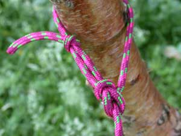
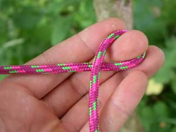
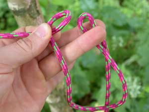
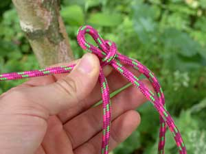
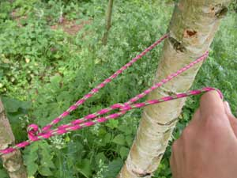
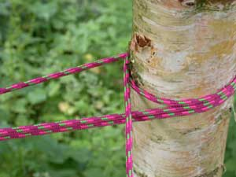
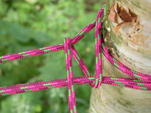
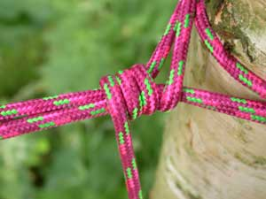

Apebrug
 1. Maak om een van de ankerpunten een paalsteek. Kies ofwel voor een dubbele paalsteek of een gewone paalsteek mét beveiligingssteek (zoals op de foto). |
 2. Maak een lus in je hand zoals op de foto (de paalsteek ligt links van je). |
 3. Neem het losse eind van de lus en plooi het touw dubbel. |
 4. Steek het dubbel geplooide touw door de lus. |
 5. Sla het losse eind om het andere ankerpunt en steek het door de lus die ontstaan is door het dubbel geplooid touw. Span aan. |
 6. Als het touw voldoende spant, sla je het touw een aantal maal om het ankerpunt. Zorg dat je geen spanning verliest! |
 7. Wind het touw om de brug en knijp de beide touwen samen. |
 8. Sla het touw een aantal maal om het samengeknepen touw. De spanning is nu verzekerd. Beveilig met een aantal halve steken. |